Orientasi halaman (Page orientation)
Word menawarkan dua opsi orientasi halaman: lanskap dan potret. Bandingkan contoh kami di bawah ini untuk melihat bagaimana orientasi dapat memengaruhi tampilan dan spasi teks dan gambar.
Lansekap berarti halaman berorientasi horizontal.
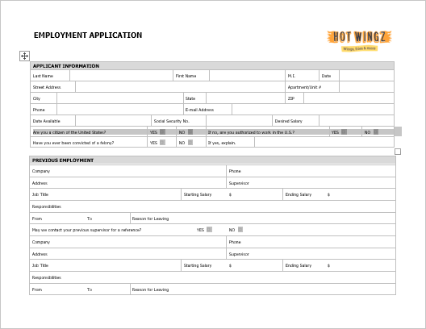
Potret berarti halaman diorientasikan secara vertikal.

Untuk mengubah orientasi halaman:
Pilih tab Tata Letak.
Klik perintah Orientation di grup Page Setup.
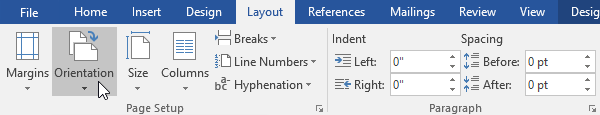
Menu tarik-turun akan muncul. Klik Portrait atau Landscape untuk mengubah orientasi halaman.

Orientasi halaman dokumen akan diubah.
Ukuran Kertas (Page Size)
Secara default, ukuran halaman dokumen baru adalah 8,5 inci kali 11 inci. Bergantung pada proyek Anda, Anda mungkin perlu menyesuaikan ukuran halaman dokumen Anda. Penting untuk dicatat bahwa sebelum mengubah ukuran halaman default, Anda harus memeriksa untuk melihat ukuran halaman mana yang dapat diakomodasi oleh printer Anda.
Untuk mengubah ukuran halaman:
Word memiliki berbagai ukuran halaman yang telah ditentukan untuk dipilih.
Pilih tab Layout, lalu klik perintah Size.
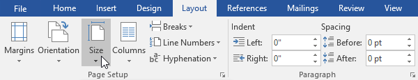
Menu tarik-turun akan muncul. Ukuran halaman saat ini disorot. Klik ukuran halaman standar yang diinginkan.

Ukuran halaman dokumen akan diubah.
Untuk menggunakan ukuran halaman khusus:
Word juga memungkinkan Anda untuk menyesuaikan ukuran halaman di kotak dialog Penyetelan Halaman.
Dari tab Tata Letak, klik Ukuran. Pilih Lebih Banyak Ukuran Kertas dari menu tarik-turun.

Kotak dialog Pengaturan Halaman akan muncul.
Sesuaikan nilai Width dan Height, lalu klik OK.

Ukuran halaman dokumen akan diubah.
Margin Halaman (Page Margins)
Sebuah marjin adalah ruang antara teks dan tepi dokumen Anda. Secara default, margin dokumen baru diatur ke Normal, yang berarti memiliki spasi satu inci antara teks dan setiap tepi. Tergantung pada kebutuhan Anda, Word memungkinkan Anda untuk mengubah ukuran margin dokumen Anda.
Untuk memformat margin halaman:
Word memiliki berbagai ukuran margin yang telah ditentukan untuk dipilih.
Pilih tab Layout, lalu klik perintah Margins.
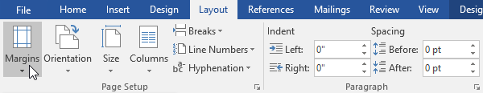
Menu tarik-turun akan muncul. Klik ukuran margin yang telah ditentukan sebelumnya yang Anda inginkan.

Margin dokumen akan diubah.
Untuk menggunakan margin khusus:
Word juga memungkinkan Anda untuk menyesuaikan ukuran margin Anda di kotak dialog Penyetelan Halaman.
Dari tab Tata Letak, klik Margin. Pilih Margin Kustom dari menu tarik-turun.
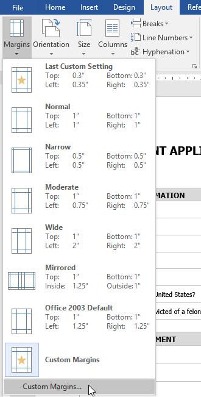
Kotak dialog Pengaturan Halaman akan muncul.
Sesuaikan nilai untuk setiap margin, lalu klik OK.

Margin dokumen akan diubah.
Anda juga dapat membuka kotak dialog Penyetelan Halaman dengan menavigasi ke tab Tata Letak dan mengklik panah kecil di sudut kanan bawah grup Penyetelan Halaman.

Anda dapat menggunakan fitur Set as Default dari Word untuk menyimpan semua perubahan pemformatan yang telah Anda buat dan secara otomatis menerapkannya ke dokumen baru. Untuk mempelajari cara melakukannya, baca pelajaran kami tentang Mengubah Pengaturan Default Anda di Word.
Tantangan!
Buka dokumen latihan kami.
Ubah orientasi halaman menjadi Potret.
Ubah ukuran halaman menjadi Legal. Jika ukuran Legal tidak tersedia, Anda dapat memilih ukuran lain seperti A5.
Ubah margin ke pengaturan Sempit.
Setelah selesai, dokumen Anda harus menjadi satu halaman jika menggunakan ukuran Legal. Seharusnya terlihat seperti ini:

Mencetak Dokumen (Printing Documents)
Setelah membuat dokumen, Anda mungkin ingin mencetaknya untuk melihat dan membagikan pekerjaan Anda secara offline. Sangat mudah untuk melihat dan mencetak dokumen di Word menggunakan panel Print.
Untuk mengakses panel Cetak:
Pilih tab File. Tampilan belakang panggung akan muncul.

Pilih Cetak. The Print panel akan muncul.
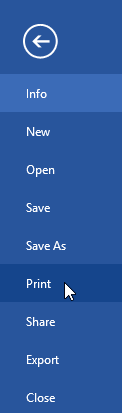
Klik tombol di interaktif di bawah ini untuk mempelajari lebih lanjut tentang menggunakan panel Cetak.

Anda juga dapat mengakses panel Print dengan menekan Ctrl+P pada keyboard Anda.
Untuk mencetak dokumen:
Arahkan ke panel Print, lalu pilih printer yang diinginkan.
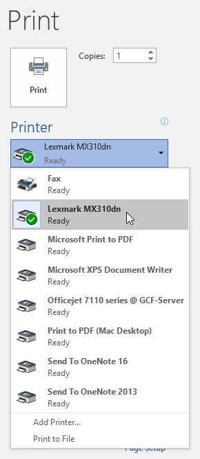
Masukkan jumlah salinan yang ingin Anda cetak.

Pilih pengaturan tambahan jika diperlukan.
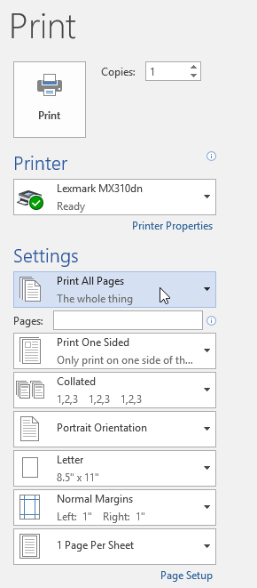
Klik Cetak.

Pencetakan khusus
Terkadang Anda mungkin merasa tidak perlu mencetak seluruh dokumen Anda, dalam hal ini pencetakan kustom mungkin lebih sesuai dengan kebutuhan Anda. Baik Anda mencetak beberapa halaman individual atau rentang halaman, Word memungkinkan Anda menentukan dengan tepat halaman mana yang ingin Anda cetak.
Untuk mencetak dokumen secara kustom:
Jika Anda ingin mencetak halaman atau rentang halaman individual, Anda harus memisahkan setiap entri dengan koma (1, 3, 5-7, atau 10-14 misalnya).
Arahkan ke panel Cetak.
Di bidang Halaman :, masukkan halaman yang ingin Anda cetak.

Klik Cetak.
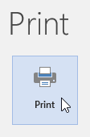
Jika dokumen Anda tidak dicetak seperti yang Anda inginkan, Anda mungkin perlu menyesuaikan beberapa pengaturan tata letak halaman. Untuk mempelajari lebih lanjut, tinjau pelajaran Tata Letak Halaman kami.
Tantangan!
Buka dokumen latihan kami.
Di panel Cetak, ubah pengaturan untuk hanya mencetak halaman 2 dan 5.
Ubah jumlah salinan menjadi 2.
Gunakan panah di bagian bawah pratinjau cetak untuk melihat setiap halaman.
Setelah selesai, panel Print Anda akan terlihat seperti ini:
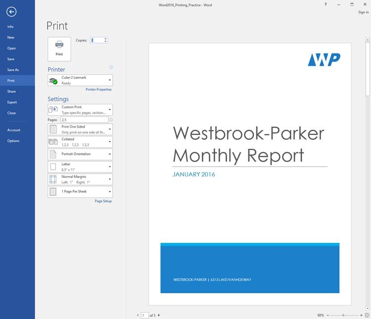
Opsional: Jika Anda memiliki printer, Anda dapat mengklik perintah Cetak. Itu harus mencetak dua salinan halaman 2 dan 5.
Breaks
Saat Anda sedang mengerjakan dokumen multi-halaman, mungkin ada saatnya Anda ingin memiliki kontrol lebih besar atas bagaimana tepatnya teks mengalir. B reaks dapat membantu dalam kasus ini. Ada banyak jenis jeda untuk dipilih tergantung pada apa yang Anda butuhkan, termasuk jeda halaman, jeda bagian, dan jeda kolom.
Untuk menyisipkan hentian halaman:
Dalam contoh kami, tajuk bagian di halaman tiga ( Pendapatan Bulanan dan Menurut Klien ) dipisahkan dari tabel di halaman di bawah ini. Dan sementara kita bisa menekan Enter sampai teks itu mencapai bagian atas halaman empat, itu bisa dengan mudah digeser jika kita menambahkan atau menghapus sesuatu di bagian lain dari dokumen. Sebagai gantinya, kita akan menyisipkan page break.
Tempatkan titik penyisipan di mana Anda ingin membuat hentian halaman. Dalam contoh kita, kita akan menempatkannya di awal heading kita.

Pada tab Sisipkan, klik perintah Hentian Halaman. Anda juga dapat menekan Ctrl+Enter pada keyboard Anda.
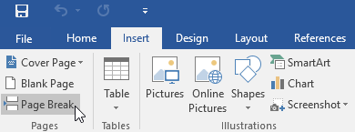
Hentian halaman akan disisipkan ke dalam dokumen, dan teks akan berpindah ke halaman berikutnya.

Secara default, jeda tidak terlihat. Jika Anda ingin melihat jeda di dokumen Anda, klik perintah Perlihatkan/Sembunyikan pada tab Beranda.

Istirahat bagian
Pemisahan bagian membuat pembatas antara bagian dokumen yang berbeda, memungkinkan Anda memformat setiap bagian secara independen. Misalnya, Anda mungkin ingin satu bagian memiliki dua kolom tanpa menambahkan kolom ke seluruh dokumen. Word menawarkan beberapa jenis pemisah bagian.
Halaman Berikutnya : Opsi ini menyisipkan pemisah bagian dan memindahkan teks setelah jeda ke halaman dokumen berikutnya.
Berkelanjutan : Opsi ini menyisipkan pemisah bagian dan memungkinkan Anda untuk terus mengerjakan halaman yang sama.
Halaman Genap dan Halaman Ganjil : Opsi ini menambahkan pemisah bagian dan memindahkan teks setelah jeda ke halaman genap atau ganjil berikutnya. Opsi-opsi ini mungkin berguna ketika Anda perlu memulai bagian baru pada halaman genap atau ganjil (seperti dengan bab baru sebuah buku).
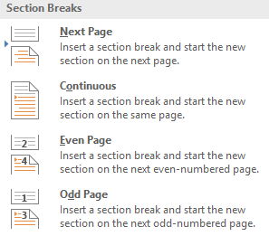
Untuk menyisipkan pemisah bagian:
Dalam contoh kita, kita akan menambahkan pemisah bagian untuk memisahkan paragraf dari daftar dua kolom.
Tempatkan titik penyisipan di tempat Anda ingin membuat jeda. Dalam contoh kita, kita akan menempatkannya di awal paragraf yang ingin kita pisahkan dari pemformatan dua kolom.
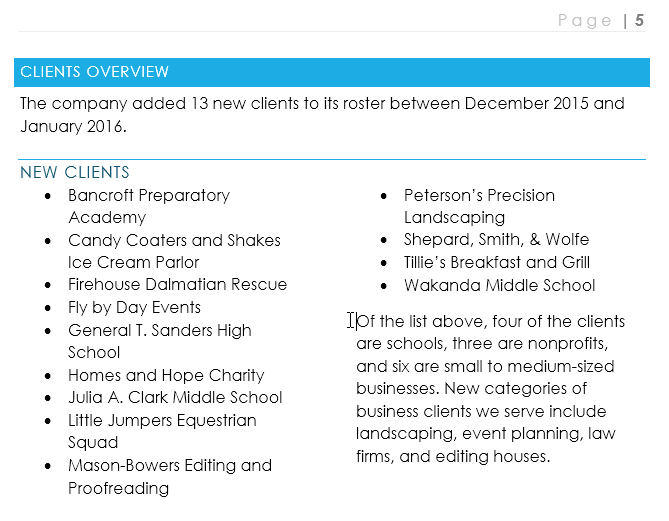
Pada tab Page Layout, klik perintah Breaks, lalu pilih section break yang diinginkan dari menu drop-down. Dalam contoh kami, kami akan memilih Berkelanjutan sehingga paragraf kami tetap berada di halaman yang sama dengan kolom.
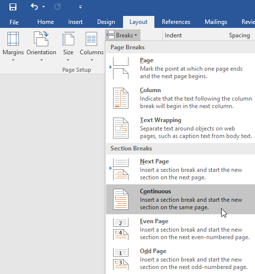
Hentian bagian akan muncul di dokumen.

Teks sebelum dan sesudah pemisah bagian sekarang dapat diformat secara terpisah. Dalam contoh kami, kami akan menerapkan pemformatan satu kolom ke paragraf.

Pemformatan akan diterapkan ke bagian dokumen saat ini. Dalam contoh kita, teks di atas pemisah bagian menggunakan pemformatan dua kolom, sedangkan paragraf di bawah pemisah menggunakan pemformatan satu kolom.
Jenis istirahat lainnya
Saat Anda ingin memformat tampilan kolom atau mengubah pembungkusan teks di sekitar gambar, Word menawarkan opsi jeda tambahan yang dapat membantu:
Kolom : Saat membuat beberapa kolom, Anda dapat menerapkan pemisah kolom untuk menyeimbangkan tampilan kolom. Teks apa pun yang mengikuti jeda kolom akan dimulai di kolom berikutnya. Untuk mempelajari lebih lanjut tentang cara membuat kolom di dokumen Anda, tinjau pelajaran kami tentang Kolom.
Pembungkusan teks : Saat teks telah dibungkus di sekitar gambar atau objek, Anda dapat menggunakan jeda pembungkusan teks untuk mengakhiri pembungkusan dan mulai mengetik pada baris di bawah gambar. Tinjau pelajaran kami tentang Gambar dan Pembungkusan Teks untuk mempelajari lebih lanjut.

Untuk menghapus jeda:
Secara default, jeda disembunyikan. Jika Anda ingin menghapus jeda, pertama-tama Anda harus memperlihatkan jeda di dokumen Anda.
Pada tab Beranda, klik perintah Perlihatkan/Sembunyikan.
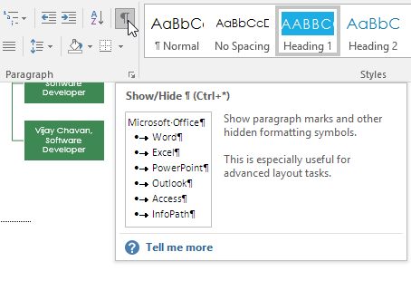
Temukan jeda yang ingin Anda hapus, lalu tempatkan titik penyisipan di awal jeda.
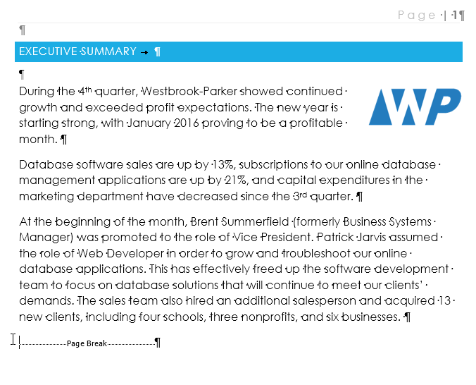
Tekan tombol Hapus. Istirahat akan dihapus dari dokumen.

Tantangan!
Buka dokumen latihan kami.
Gulir ke bagian Proyeksi Pendapatan di dekat akhir dokumen.
Hapus jeda halamansetelah grafik Proyeksi Kuartal 2 oleh Klien.
Tempatkan kursor Anda di awal tajuk Proyeksi Aplikasi Web.
Sisipkan jeda bagian Halaman Berikutnya.
Di grup Page Setup pada tab Layout, klik menu drop-down Columns dan pilih One. Ini memformat halaman kembali ke satu kolom dan harus memungkinkan tajuk Proyeksi Aplikasi Web dan tabel di bawahnya terbentang di seluruh halaman. Anda akan mempelajari lebih lanjut tentang kolom dalam pelajaran berikutnya.
Setelah selesai, dua halaman terakhir akan terlihat seperti ini:
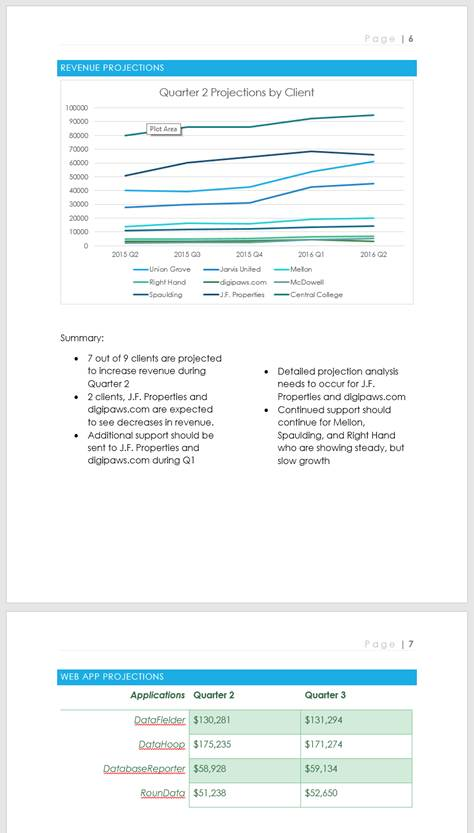
Kolom (Columns)
Terkadang informasi yang Anda sertakan dalam dokumen Anda paling baik ditampilkan dalam kolom. Kolom dapat membantu meningkatkan keterbacaan, terutama dengan jenis dokumen tertentu—seperti artikel surat kabar, buletin, dan selebaran. Word juga memungkinkan Anda untuk menyesuaikan kolom Anda dengan menambahkan jeda kolom.
Untuk menambahkan kolom ke dokumen:
Pilih teks yang ingin Anda format.

Pilih tab Layout, lalu klik perintah Columns. Menu tarik-turun akan muncul.
Pilih jumlah kolom yang ingin Anda buat.

Teks akan diformat menjadi kolom.
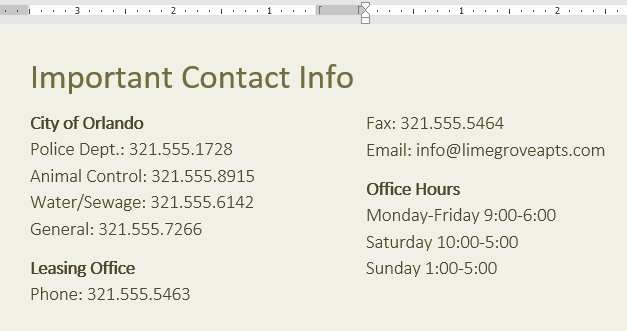
Pilihan kolom Anda tidak terbatas pada menu tarik-turun yang muncul. Pilih Kolom Lainnya di bagian bawah menu untuk mengakses kotak dialog Kolom. Klik panah di sebelah Jumlah kolom: untuk menyesuaikan jumlah kolom.

Jika Anda ingin menyesuaikan penspasian dan perataan kolom, klik dan seret penanda indentasi pada Penggaris hingga kolom muncul seperti yang Anda inginkan.
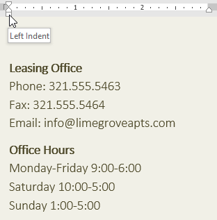
Untuk menghapus kolom:
Untuk menghapus pemformatan kolom, tempatkan titik penyisipan di mana saja di kolom, lalu klik perintah Kolom pada tab Tata Letak. Pilih Satu dari menu tarik-turun yang muncul.
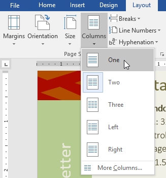
Menambahkan jeda kolom
Setelah Anda membuat kolom, teks akan otomatis mengalir dari satu kolom ke kolom berikutnya. Namun, terkadang, Anda mungkin ingin mengontrol dengan tepat di mana setiap kolom dimulai. Anda dapat melakukan ini dengan membuat pemisah kolom.
Untuk menambahkan jeda kolom:
Dalam contoh kita di bawah ini, kita akan menambahkan pemisah kolom yang akan memindahkan teks ke awal kolom berikutnya.
Tempatkan titik penyisipan di awal teks yang ingin Anda pindahkan.
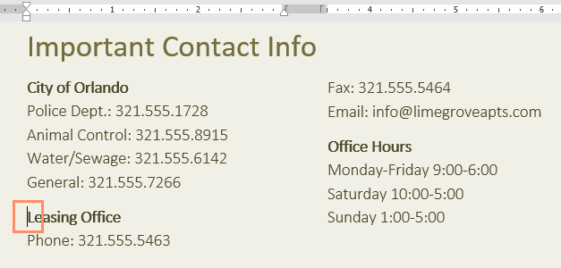
Pilih tab Layout, lalu klik perintah Breaks. Menu tarik-turun akan muncul.
Pilih Kolom dari menu.
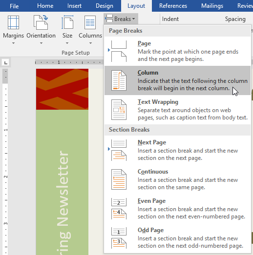
Teks akan pindah ke awal kolom. Dalam contoh kita, itu pindah ke awal kolom berikutnya.
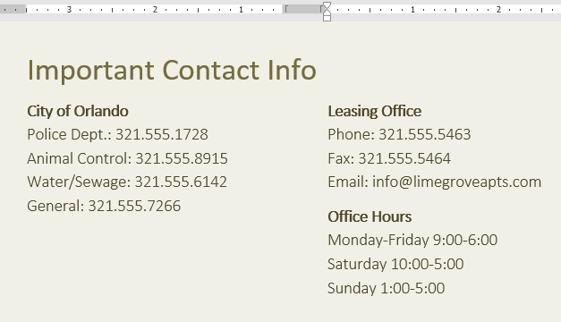
Untuk mempelajari lebih lanjut tentang menambahkan jeda ke dokumen Anda, tinjau pelajaran kami tentang Jeda.
Untuk menghapus jeda kolom:
Secara default, jeda disembunyikan. Jika Anda ingin memperlihatkan jeda di dokumen Anda, klik perintah Perlihatkan/Sembunyikan pada tab Beranda.

Tempatkan titik penyisipan di sebelah kiri jeda yang ingin Anda hapus.
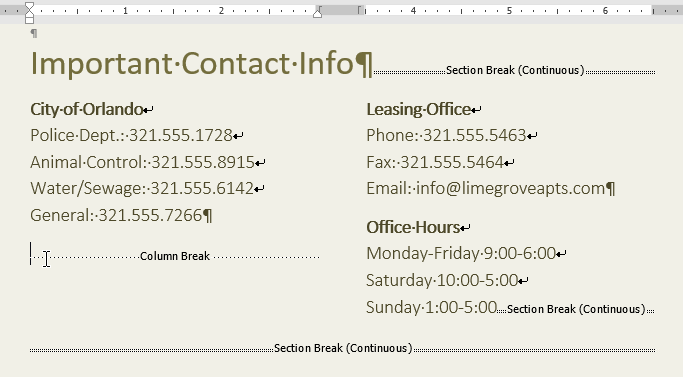
Tekan tombol hapus untuk menghapus jeda.

Tantangan!
Buka dokumen latihan kami.
Gulir ke halaman 3.
Pilih semua teks dalam daftar berpoin di bawah Pengingat Komunitas dan format sebagai dua kolom.
Tempatkan kursor Anda di awal poin keempat di depan kata Pengunjung.
Masukkan jeda kolom.
Setelah selesai, halaman Anda akan terlihat seperti ini:
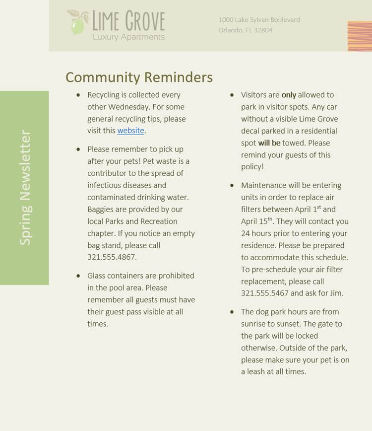
Header dan Footer (Headers and Footers)
The sundulan adalah bagian dari dokumen yang muncul di margin atas, sedangkan footer adalah bagian dari dokumen yang muncul di margin bawah. Header dan footer umumnya mengandung informasi tambahan seperti nomor halaman, tanggal, seorang nama penulis, dan catatan kaki, yang dapat membantu menjaga dokumen lagi terorganisir dan membuat mereka lebih mudah dibaca. Teks yang dimasukkan di header atau footer akan muncul di setiap halaman dokumen.
Untuk membuat header atau footer:
Dalam contoh kami, kami ingin menampilkan nama penulis di bagian atas setiap halaman, jadi kami akan menempatkannya di header.
Klik dua kali di mana saja di margin atas atau bawah dokumen Anda. Dalam contoh kami, kami akan mengklik dua kali margin atas.

Header atau footer akan terbuka, dan tab Desain akan muncul di sisi kanan Pita. Titik penyisipan akan muncul di header atau footer.
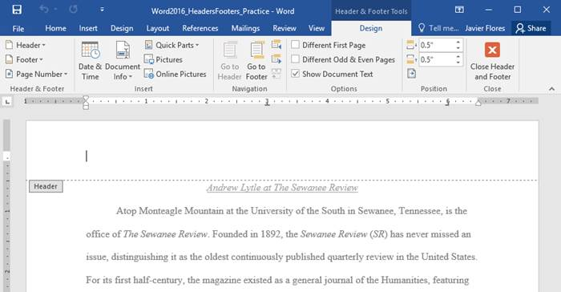
Ketik informasi yang diinginkan ke dalam header atau footer. Dalam contoh kita, kita akan mengetikkan nama penulis dan tanggalnya.
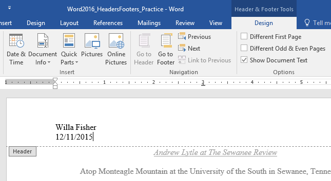
Setelah selesai, klik Tutup Header dan Footer. Anda juga dapat menekan tombol Esc.

Teks header atau footer akan muncul.

Untuk menyisipkan header atau footer preset:
Word memiliki berbagai preset header dan footer yang dapat Anda gunakan untuk menyempurnakan desain dan tata letak dokumen Anda. Dalam contoh kita, kita akan menambahkan header preset ke dokumen kita.
Pilih tab Sisipkan, lalu klik perintah Header atau Footer. Dalam contoh kita, kita akan mengklik perintah Header.

Di menu yang muncul, pilih header atau footer preset yang diinginkan.

Header atau footer akan muncul. Banyak header dan footer preset berisi placeholder teks yang disebut bidang Kontrol Konten. Bidang ini bagus untuk menambahkan informasi seperti judul dokumen, nama penulis, tanggal, dan nomor halaman.

Untuk mengedit bidang Kontrol Konten, klik bidang tersebut dan ketik informasi yang diinginkan.

Setelah selesai, klik Tutup Header dan Footer. Anda juga dapat menekan tombol Esc.
Jika Anda ingin menghapus bidang Kontrol Konten, klik kanan bidang tersebut dan pilih Hapus Kontrol Konten dari menu yang muncul.

Mengedit header dan footer
Setelah Anda menutup header atau footer, itu akan tetap terlihat, tetapi akan dikunci. Cukup klik dua kali header atau footer untuk membukanya, yang memungkinkan Anda untuk mengeditnya.

Opsi tab desain
Saat header dan footer dokumen Anda tidak terkunci, tab Desain akan muncul di sisi kanan Pita, memberi Anda berbagai opsi pengeditan:
Sembunyikan header dan footer halaman pertama : Untuk beberapa dokumen, Anda mungkin tidak ingin halaman pertama menampilkan header dan footer, seperti jika Anda memiliki halaman sampul dan ingin memulai penomoran halaman di halaman kedua. Jika Anda ingin menyembunyikan header dan footer halaman pertama, centang kotak di samping Halaman Pertama Berbeda.

Hapus header atau footer : Jika ingin menghapus semua informasi yang terdapat pada header, klik perintah Header dan pilih Remove Header dari menu yang muncul. Demikian pula, Anda dapat menghapus footer menggunakan perintah Footer.
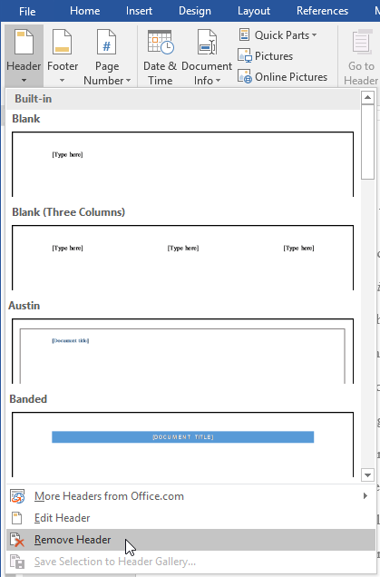
Nomor Halaman : Anda dapat secara otomatis memberi nomor setiap halaman dengan perintah Nomor Halaman. Tinjau pelajaran Nomor Halaman kami untuk mempelajari lebih lanjut.
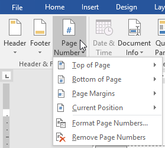
Opsi tambahan : Dengan perintah yang tersedia di grup Sisipkan, Anda dapat menambahkan tanggal dan waktu, info dokumen, gambar, dan lainnya ke header atau footer Anda.

Untuk menyisipkan tanggal atau waktu ke dalam header atau footer:
Terkadang sangat membantu untuk menyertakan tanggal atau waktu di header atau footer. Misalnya, Anda mungkin ingin dokumen Anda menunjukkan tanggal saat dibuat.
Di sisi lain, Anda mungkin ingin menunjukkan tanggal saat itu dicetak, yang dapat Anda lakukan dengan mengaturnya untuk memperbarui secara otomatis. Ini berguna jika Anda sering memperbarui dan mencetak dokumen karena Anda selalu dapat mengetahui versi mana yang terbaru.
Klik dua kali di mana saja pada header atau footer untuk membukanya. Tempatkan titik penyisipan di tempat Anda ingin tanggal atau waktu muncul. Dalam contoh kita, kita akan menempatkan titik penyisipan pada baris di bawah nama penulis.

The Desain tab akan muncul. Klik perintah Tanggal & Waktu.
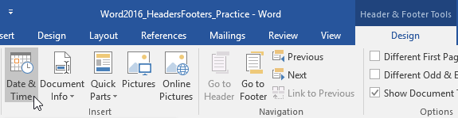
The Tanggal dan Waktu kotak dialog akan muncul. Pilih format tanggal atau waktu yang diinginkan.
Centang kotak di sebelah Perbarui secara otomatis jika Anda ingin tanggal berubah setiap kali Anda membuka dokumen. Jika Anda tidak ingin tanggal berubah, biarkan opsi ini tidak dicentang.
Klik Oke.

Tanggal akan muncul di header.
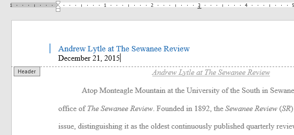
Tantangan!
Buka dokumen latihan kami. Jika Anda telah mengunduh dokumen latihan kami untuk mengikuti pelajaran, pastikan untuk mengunduh salinan baru dengan mengeklik tautan di langkah ini.
Buka headernya.
Pilih Rata Kanan pada tab Beranda dan ketik nama Anda.
Di bawah nama Anda, gunakan perintah Tanggal & Waktu pada tab Desain dan masukkan tanggal menggunakan format apa pun yang Anda inginkan.
Di bagian footer, masukkan Grid footer preset. Jika versi Word Anda tidak memiliki preset Grid, Anda dapat memilih preset yang tersedia.
Tutup header dan footer.
Setelah selesai, halaman Anda akan terlihat seperti ini:

Nomor Halaman (Page Numbers)
Nomor halaman dapat digunakan untuk secara otomatis memberi nomor pada setiap halaman dalam dokumen Anda. Mereka datang dalam berbagai format angka dan dapat disesuaikan dengan kebutuhan Anda. Nomor halaman biasanya ditempatkan di header, footer, atau margin samping. Saat Anda perlu memberi nomor beberapa halaman secara berbeda, Word memungkinkan Anda untuk memulai ulang penomoran halaman.
Untuk menambahkan nomor halaman:
Word dapat secara otomatis melabeli setiap halaman dengan nomor halaman dan menempatkannya di header, footer, atau margin samping. Jika Anda memiliki header atau footer yang ada, itu akan dihapus dan diganti dengan nomor halaman.
Pada tab Sisipkan, klik perintah Nomor Halaman.

Buka menu Top of Page, Bottom of Page, atau Page Margins, tergantung di mana Anda ingin menempatkan nomor halaman, lalu pilih gaya header yang diinginkan.
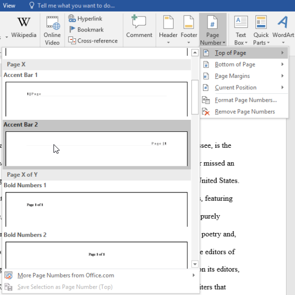
Penomoran halaman akan muncul.

Tekan tombol Esc untuk mengunci header dan footer.
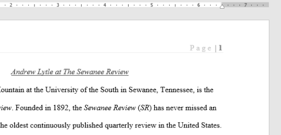
Jika Anda perlu membuat perubahan pada nomor halaman Anda, cukup klik dua kali header atau footer untuk membukanya.
Jika Anda telah membuat nomor halaman di margin samping, nomor tersebut masih dianggap sebagai bagian dari header atau footer. Anda tidak akan dapat memilih nomor halaman kecuali header atau footer dipilih.
Untuk menambahkan nomor halaman ke header atau footer yang ada:
Jika Anda sudah memiliki header atau footer dan Anda ingin menambahkan nomor halaman ke dalamnya, Word memiliki opsi untuk secara otomatis memasukkan nomor halaman ke dalam header atau footer yang ada. Dalam contoh kita, kita akan menambahkan penomoran halaman ke header dokumen kita.
Klik dua kali di mana saja pada header atau footer untuk membukanya.

Pada tab Desain, klik perintah Nomor Halaman. Di menu yang muncul, arahkan mouse ke Current Position dan pilih gaya penomoran halaman yang diinginkan.

Penomoran halaman akan muncul.

Setelah selesai, tekan tombol Esc.
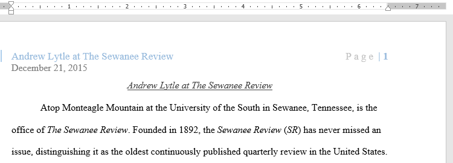
Untuk menyembunyikan nomor halaman di halaman pertama:
Di beberapa dokumen, Anda mungkin tidak ingin halaman pertama menampilkan nomor halaman. Anda dapat menyembunyikan nomor halaman pertama tanpa mempengaruhi halaman lainnya.
Klik dua kali header atau footer untuk membukanya.
Dari tab Desain, beri tanda centang di sebelah Halaman Pertama Berbeda. Header dan footer akan hilang dari halaman pertama. Jika mau, Anda bisa mengetikkan sesuatu yang baru di header atau footer, dan itu hanya akan memengaruhi halaman pertama.

Jika Anda tidak dapat memilih Halaman Pertama Berbeda, mungkin karena objek di dalam header atau footer dipilih. Klik area kosong di dalam header atau footer untuk memastikan tidak ada yang dipilih.
Untuk memulai ulang penomoran halaman:
Word memungkinkan Anda untuk memulai kembali penomoran halaman pada halaman mana pun dari dokumen Anda. Anda dapat melakukan ini dengan menyisipkan pemisah bagian dan memilih nomor yang ingin Anda mulai ulang penomorannya. Dalam contoh kita, kita akan memulai ulang penomoran halaman untuk bagian Works Cited dokumen kita.
Tempatkan titik penyisipan di bagian atas halaman tempat Anda ingin memulai ulang penomoran halaman. Jika ada teks di halaman, tempatkan titik penyisipan di awal teks.
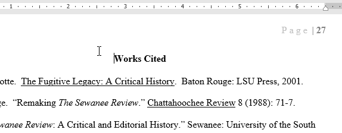
Pilih tab Layout, lalu klik perintah Breaks. Pilih Halaman Berikutnya dari menu tarik-turun yang muncul.
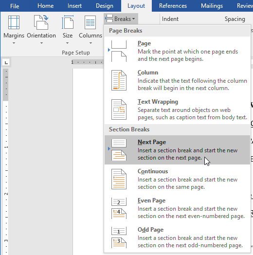
Hentian bagian akan ditambahkan ke dokumen.
Klik dua kali header atau footer yang berisi nomor halaman yang ingin Anda mulai ulang.

Klik perintah Nomor Halaman. Pada menu yang muncul, pilih Format Page Numbers.

Sebuah kotak dialog akan muncul. Klik Mulai di: tombol. Secara default, ini akan dimulai pada 1. Jika mau, Anda dapat mengubah nomornya. Setelah selesai, klik OK.

Penomoran halaman akan dimulai ulang.

Untuk mempelajari lebih lanjut tentang menambahkan pemisah bagian ke dokumen Anda, tinjau pelajaran kami tentang Jeda.
Tantangan!
Buka dokumen latihan kami.
Pada halaman 1, masukkan nomor halaman Accent Bar 4 di Bagian Bawah Halaman.
Pada Design Options, pilih Different First Page. Nomor halaman sekarang harus disembunyikan di halaman pertama.
Gulir ke halaman 27 dokumen.
Tempatkan kursor Anda di awal judul Works Cited dan sisipkan sebuah Continuous Section break.
Di footer halaman 27, mulai ulang penomoran halaman di 1.
Setelah selesai, bagian bawah halaman 27 akan terlihat seperti ini:
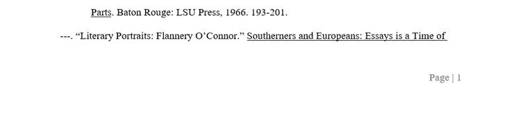